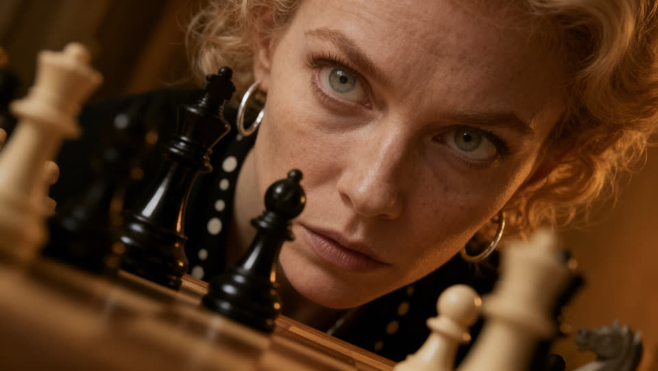

Kling Image 4.0 official example: 35mm suspense still through blurred chess pieces, Dutch angle, fine grain and amber-caramel palette

An official example from the Kling Image 4.0 User Guide (published 2026-11-18, "Narrative Storytelling"): a 35mm film-photography thriller still of a freckled woman with pale blonde curls leaning over a chessboard. The prompt is a model of measurable framing: Dutch angle "tilted 45 degrees to the left", her face takes "more than 50%" of the frame, foreground pieces fill "approximately 45%" as a blurred natural frame, focus "precisely locked on the woman's right eye", warm side-top light from upper right, slightly overexposed highlights, fine film grain. Use it as a start frame for an image-to-video thriller beat.
Prompt
A cinematic 35mm film photography aesthetic, featuring fine film grain and the classic look of a Hollywood suspense thriller. The image captures a tense moment during a chess match, as a woman leans over the chessboard, studying the pieces and engaging in a psychological battle with her opponent. The main subject is a young woman with pale blonde curly hair, fair skin, freckles, light-colored lips, and light blue-green eyes. She wears silver hoop earrings and a black outfit decorated with white polka dots. Leaning forward with her face extremely close to the camera, she adopts the posture of someone looking down at a chessboard during a match. Her expression is tense and alert, as though she is carefully examining a crucial move. The setting is a warm-toned indoor space. In the foreground, a chessboard and chess pieces are visible, with the checkered pattern of the board faintly discernible. Soft, warm bokeh lights appear in the background. The shot uses a Dutch angle, tilted 45 degrees to the left, creating a sense of instability and suspense. The camera looks upward at the woman's face from between the chess pieces, creating an extremely close, low-angle voyeuristic perspective. She appears to be leaning over and scrutinizing the chessboard. Her face occupies the upper-middle portion of the frame, taking up more than 50% of the image. The foreground chess pieces fill approximately 45% of the lower and side edges of the frame. They are extremely blurred and enlarged, forming a natural frame around the subject. The warm bokeh lights in the background are further softened and reduced in scale, enhancing the sense of perspective and spatial depth between the subject, props, and environment. The lighting consists of soft, warm side-top lighting entering diagonally from the upper right of the frame, creating natural transitions between light and shadow across the woman's face. Noticeable highlights appear on the tip of her nose and cheekbones, while the tops of the chess pieces catch faint reflections. The image emphasizes the freckles and skin texture on her face, her light blonde curls, the cool metallic sheen of her silver earrings, the texture of her black polka-dot outfit, and the realistic refraction and soft-focus effects produced by the foreground chess pieces. The depth of field is extremely shallow, with focus precisely locked on the woman's right eye and the bridge of her nose. Her left eye, lips, and the foreground chess pieces are softly blurred. The overall palette is dominated by rich amber, caramel brown, and warm orange tones. The chess pieces are black and white, her skin has a warm fair tone, and her black clothing contrasts with the cool highlights of her silver accessories. Highlights are slightly overexposed, while shadows are rich and transition naturally through warm tones. The overall atmosphere is tense and suspenseful, evoking a chess match, psychological warfare, vintage warmth, and a struggle for power. The image conveys an immersive sense of intellectual confrontation, as though the viewer is secretly observing the match.
Our Seedance 2.5 adaptation
[ADAPTED for Seedance 2.5 by Grok Bot; not the creator's prompt. Follows the official BytePlus Seedance 2.5 prompt guide and its official sd25-pe prompt-optimizer skill: parameters only on the API line (not in the prompt body), subject + action + scene, then visuals, camera (move, subject, start, direction, arrival) and sound; only the source's own exclusions are kept.] API: duration 5, ratio 16:9, resolution 1080p (4k for a final), generate_audio true; first_frame = the GRN-089 still. 【Subject】The woman exactly as in the first frame: pale blonde curls, freckles, light blue-green eyes, silver hoop earrings, black outfit with white polka dots, leaning over the chessboard with her face very close to the lens; blurred black and white pieces fill the lower edge of the frame. 【Action】She holds still, studying the board; her eyes flick from one piece to another, then lift slowly to look past the camera at her unseen opponent; the corner of her mouth tightens. A single blurred piece in the foreground is lifted out of frame by an unseen hand. 【Camera】Keep the 45-degree Dutch angle and the low position between the pieces; an almost imperceptible push-in toward her right eye, focus staying locked on that eye. 【Visuals】35mm film-photography look, fine film grain, rich amber, caramel and warm orange tones, soft warm side-top light from the upper right, slightly overexposed highlights, warm bokeh lights behind her, real skin texture and freckles. No text, no watermark. 【Sound】A quiet room tone, a clock ticking, the soft click of a chess piece being set down, her slow breath. No music.
Tags: Kling Image 4.0, official example, 35mm film look, fine grain, Dutch angle, foreground framing, percentage composition, eye focus, suspense still, image